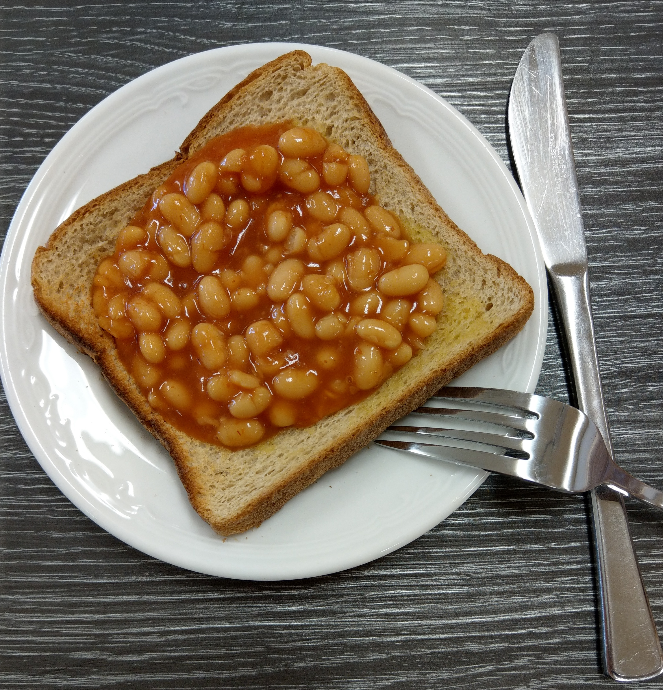

Beans on Toast

Description
Need a quick morning snack? I have got you covered, this recipe is so easy a monkey could follow it!
Ingredients
- 2 slices of bread
- A can of baked beans
Steps
- Place the bread into a toaster and wait for it to cook
- Pour a can of baked beans into a cooking pot and heat up on a low heat, this should take 3-4 minutes
- Place you toast on a plate, then get pour the baked beans ontop.